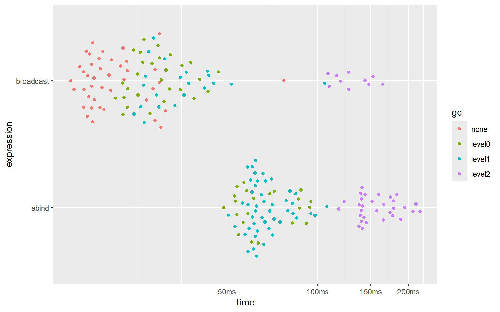
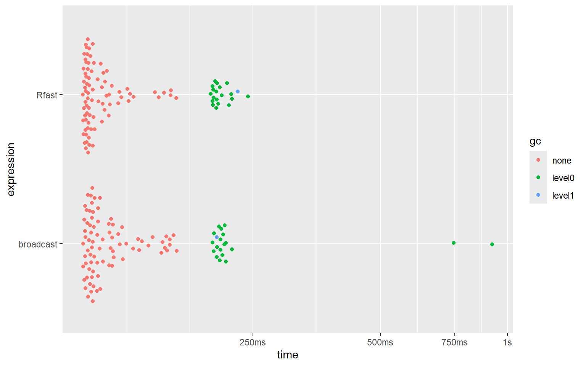
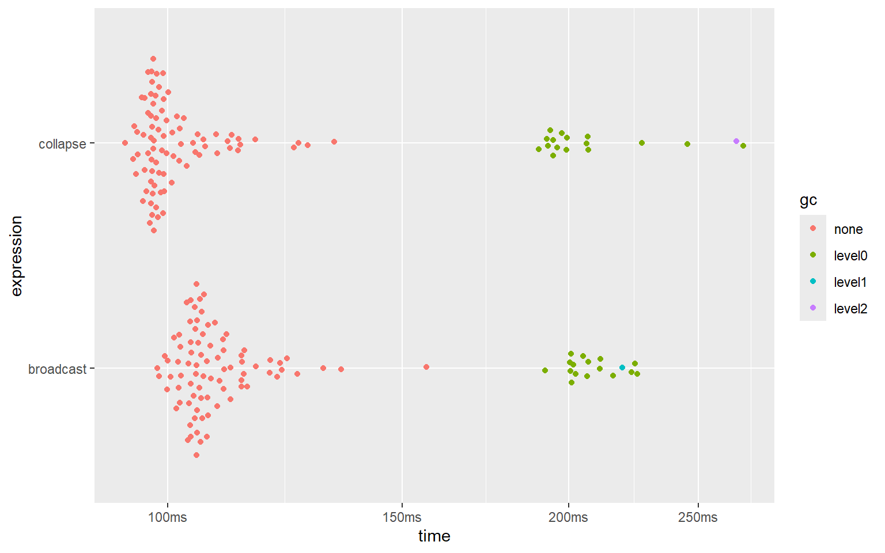
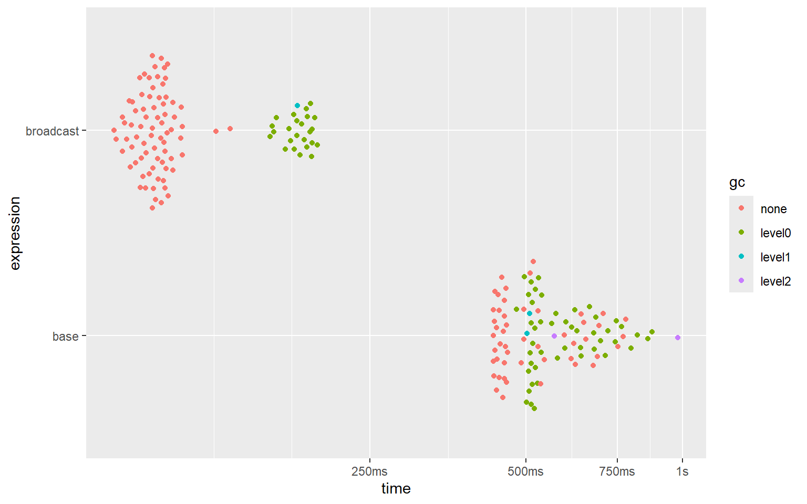

n <- 110L
nms <- function(n) sample(letters, n, TRUE)
x <- array(as.double(1:25), c(n, n, n))
y <- array(as.double(-1:-25), c(n, n, n))
dimnames(x) <- lapply(dim(x), nms)
dimnames(y) <- lapply(dim(y), nms)
input <- list(x, y, x)
gc()
bm_abind <- bench::mark(
abind = abind::abind(input, along = 2),
broadcast = bind_array(input, 2),
min_iterations = 100,
check = FALSE # because abind adds empty dimnames
)
summary(bm_abind)
plot(bm_abind)Other benchmarks
Introduction
This page benchmarks some of the functions from ‘broadcast’ with some near-equivalent functions from other packages. The code is given here also.
The ‘benchmark’ package was used for measuring speed and memory usage, and for producing the figures showing the results.
The benchmarks were all run on the same computer (processor: 12th Gen Intel(R) Core(TM) i5-12500H @ 2.50 GHz) with 32GB of RAM and running the Windows 11 OS (64 bit).
version 4.4.0 with ‘Rstudio’ version 2024.12.1 was used to run the code.
The various comparisons are split over several sections. The code used to run the benchmarks is given in each section, just before the results.
abind::abind()
In this section, te performance of the bind_array() function from ‘broadcast’ is compared to the performance of the abind() function from the ‘abind’ package.
The following code was used:
And here are the results:
#> # A tibble: 2 × 6
#> expression min median `itr/sec` mem_alloc `gc/sec`
#> <bch:expr> <bch:tm> <bch:tm> <dbl> <bch:byt> <dbl>
#> 1 abind 34.7ms 41.3ms 23.8 121.9MB 0.736
#> 2 broadcast 14.2ms 14.9ms 63.2 60.9MB 1.29
#> Loading required namespace: tidyr
Clearly, the bind_array() function from ‘broadcast’ is about 2 to 3 times faster than the abind() function from the ‘abind’ package. It is also about 2 times more memory efficient.
Rfast::Outer()
An outer computation is a special case of broadcasting, namely a broadcasting computation between a row-vector and a column-vector. The outer() function from base ‘R’ is too slow and consumes too much memory to provide any meaningful benchmark. But the ‘Rfast’ package provides a very fast implementation of the outer() function. It may be interesting how broadcasted operations hold up to the famously fast ‘Rfast’ package.
Here the outer-sum between a row-vector x and column-vector y (both have 9000 elements) is computed using Rfast::outer() and broadcast::bc.d(), and their speeds and memory consumption are compared.
The following code was used:
n <- 9e3
x <- array(rnorm(10), c(1, n))
y <- array(rnorm(10), c(n, 1))
gc()
bm_outer <- bench::mark(
Rfast = Rfast::Outer(x, y, "+"),
broadcast = bc.d(x, y, "+"),
min_iterations = 100
)
summary(bm_outer)
plot(bm_outer)And here are the results:
#> # A tibble: 2 × 6
#> expression min median `itr/sec` mem_alloc `gc/sec`
#> <bch:expr> <bch:tm> <bch:tm> <dbl> <bch:byt> <dbl>
#> 1 Rfast 97.9ms 103ms 8.88 618MB 4.57
#> 2 broadcast 97.9ms 105ms 9.33 618MB 4.60
It seems that the implementations of ‘broadcast’ and the blazingly fast ‘Rfast’ package reach similar speeds and use the same amount of memory.
Note, however, that Rfast::Outer() unfortunately only supports numeric vectors, and does not provide higher-dimensional broadcasting. ‘broadcast’, on the other hand, supports all atomic types as well as the list recursive type, and supports arrays of any dimensions up to 16 dimensions.
%r+% operator from ‘collapse’
The impressive ‘collapse’ package supports a large set of blazingly fast functions for a large variety of tasks. One of these is the x %r% v operator. Given a matrix x and a vector v, x %r+% v will add v to every row of x. Using this function in this way is equivalent to the bc.d() function, using a column-vector for v.
Here these 2 approaches are benchmarked.
The code used was as follows:
n <- 8e3
x <- matrix(rnorm(10), n, n)
v <- array(rnorm(10), c(1, n))
gc()
bm_collapse_row <- bench::mark(
collapse = x %r+% v,
broadcast = bc.d(x, v, "+"),
min_iterations = 100
)
summary(bm_collapse_row)
plot(bm_collapse_row)And here are the results:
#> # A tibble: 2 × 6
#> expression min median `itr/sec` mem_alloc `gc/sec`
#> <bch:expr> <bch:tm> <bch:tm> <dbl> <bch:byt> <dbl>
#> 1 collapse 94.1ms 96.4ms 9.71 488MB 3.24
#> 2 broadcast 97.1ms 114.4ms 8.85 488MB 2.95
The ‘collapse’ package is slightly faster than ‘broadcast’ in this case. This does show how super fast ‘collapse’ truly is.
Base ‘R’ replication
Here replicating array dimensions using base ‘R’ is benchmarked against broadcasting.
The following code was used:
n <- 400
x <- array(rnorm(10), c(1, n, 1))
y <- array(rnorm(10), c(n, 1, n))
gc()
bm_base <- bench::mark(
base = x[rep(1, n), , rep(1, n)] + y[, rep(1, n), ],
broadcast = bc.d(x, y, "+"),
min_iterations = 100
)
summary(bm_base)
plot(bm_base)And here are the results:
#> # A tibble: 2 × 6
#> expression min median `itr/sec` mem_alloc `gc/sec`
#> <bch:expr> <bch:tm> <bch:tm> <dbl> <bch:byt> <dbl>
#> 1 base 431.8ms 458.4ms 1.91 977MB 2.03
#> 2 broadcast 80.4ms 96.2ms 10.4 488MB 3.45
‘broadcasting’ is 4 to 5 times (!) faster than replicating array dimensions, and uses approximately 2 times less memory.